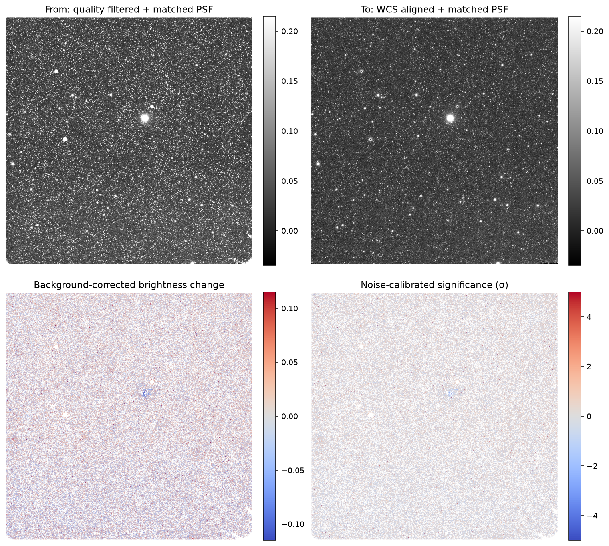

NASA Planet X · Hackathon prototype
One sky.
Two moments in time.
Explore a real two-epoch SPHEREx D5 comparison at RA 133.805°, Dec −8.770°. This presentation uses local, precomputed science products and never depends on a live archive request.
Offline demo
A reliable presentation, even when IRSA is busy
The same quality-filtered outputs produced by the Python pipeline are packaged with this page. Loading the demo is instant; no FITS download or server-side analysis is performed.
Two selected observations
Sky time-lapse


Selected position
RA 133.805°
Dec −8.770°
Two released D5 observations, aligned on the same celestial grid and displayed with a shared brightness scale.
Spectral detectorD5
Time baseline373 days
Frame coverage99.8%
Scientific validation
What changed between the two dates?
ReliabilityUsable with caution
This is an infrared brightness-change map, not a physical temperature map. Blue means dimmer, white means little measured change and red means brighter in the second observation.

Blue Dimmer
White Little change
Red Brighter
View the technical comparison
WCS aligned · wavelength matched · PSF matched · background corrected · noise calibrated

Candidate review
Three residuals worth inspecting
These are screening results, not confirmed objects. All three carry artifact warnings and require independent follow-up.

#1 · faded or disappearedRA 135.18601° · Dec −9.93616°Bright-source residual

#2 · faded or disappearedRA 132.38724° · Dec −9.65165°Bright-source residual

#3 · faded or disappearedRA 132.33716° · Dec −7.88683°Single-pixel residual
This hackathon analysis is designed for transparent exploration and presentation. A credible discovery requires repeat detections, catalogue cross-matching, multi-epoch photometry and independent confirmation.